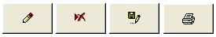

|
Laboratorio 10. ACCESS Botones
|

|
|
| . |

Objetivos:
El alumno será capaz de:
- Crear macros
- Asignar macros a botones
|

Instrucciones:
|
.
. 1. Creación de botones de
exploración de registros
- Abre el formulario de
Clientes, dando doble clic sobre este
- Abre el formulario de
Clientes en vista diseño Ver > Vista diseño
- Crea los siguientes
botones de navegación de registros:
.
.
Categorías: Navegación de registros
Acciones:
- Ir al primer registro
- Ir al registro anterior
- Ir al registro siguiente
- Ir al último registro
.
. - Checa tus botones dando clic en Ver >
Vista Formulario
2. Creación de botones de operaciones con registros
- Crea los siguientes botones
de operaciones con registros:

.
Categorías: Operaciones con registros
Acciones:
- Agregar nuevo registro
- Eliminar registro
- Guardar registro
- Imprimir registro
.
. - Checa tus botones dando clic en Ver >
Vista Formulario
3. Alinea y ajusta el
tamaño de los botones
- Selecciona todos tus
botones y con el botón derecho selecciona del menú contextual la opción de
Disposición > Tabular
.
|

Especificaciones
de entrega:
- Nombre
del entregable: LaHuerta_matricula.accdb
- Medio
de entrega: Se entrega en Canvas en la sección de
Laboratorio: Botones
Instrucciones para
enviar tus archivos por Canvas:
- Haz
clic en la actividad de Laboratorio: Botones
- Haz
clic en el botón de Entregar tarea.
- En el
fólder de Carga del archivo, haz clic en el botón
de Examinar y localiza el archivo *.accdb.
- Cuando
hayas terminado de subir tus archivos, haz clic en el botón de
Entregar tarea y listo!!
|